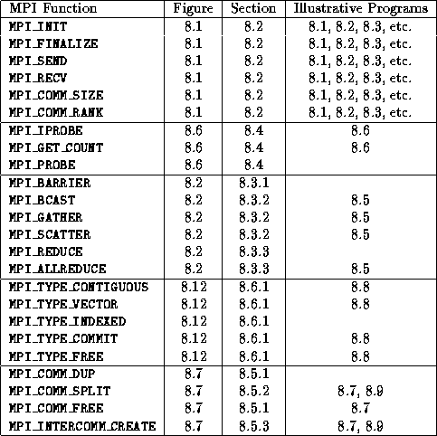
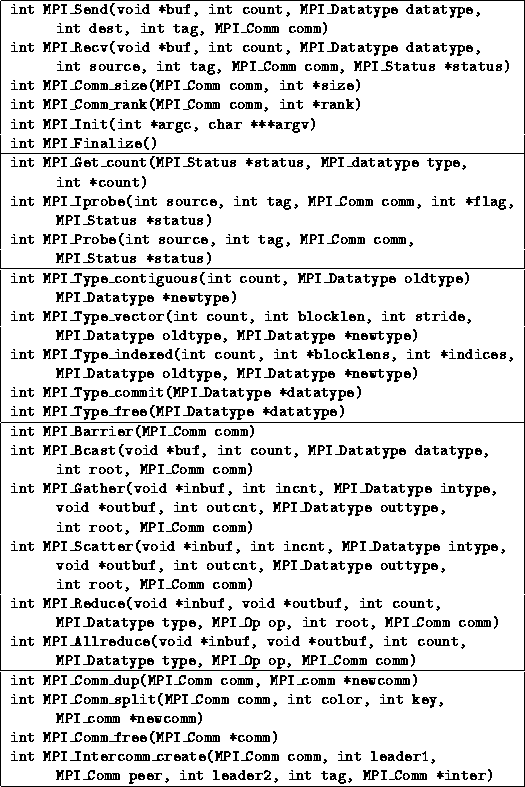
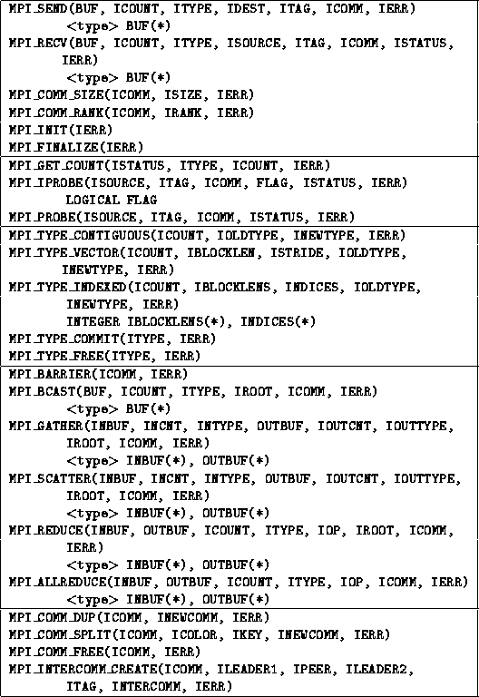

![[DBPP]](pictures//asm_color_tiny.gif)


![[Search]](pictures//search_motif.gif)
This chapter has described the message-passing library approach to parallel programming and has shown how parallel algorithm designs developed using the techniques from Part I can be translated into message-passing programs. It has also provided a tutorial introduction to the MPI message-passing standard. Table 8.2 summarizes the MPI routines described in this chapter; Tables 8.3 and 8.4 summarize the C and Fortran language bindings, respectively, for these functions and give the types of each function's arguments.

Table 8.2: MPI quick reference: the functions included in the MPI
subset, the figure in which each is defined, the section in which
each is described, and the programs that illustrate their
use.
The principal features of the message-passing programming model as realized in MPI are as follows.

Table 8.3: MPI quick reference: C language binding.

Table: MPI quick reference: Fortran language binding. For brevity,
we adopt the convention that arguments with an I prefix have
type INTEGER unless specified otherwise. The ISTATUS
argument is always an integer array of size
MPI_STATUS_SIZE.
© Copyright 1995 by Ian Foster